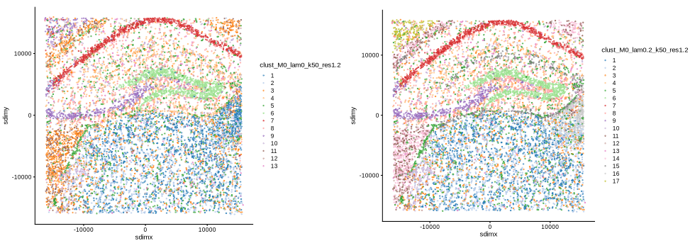
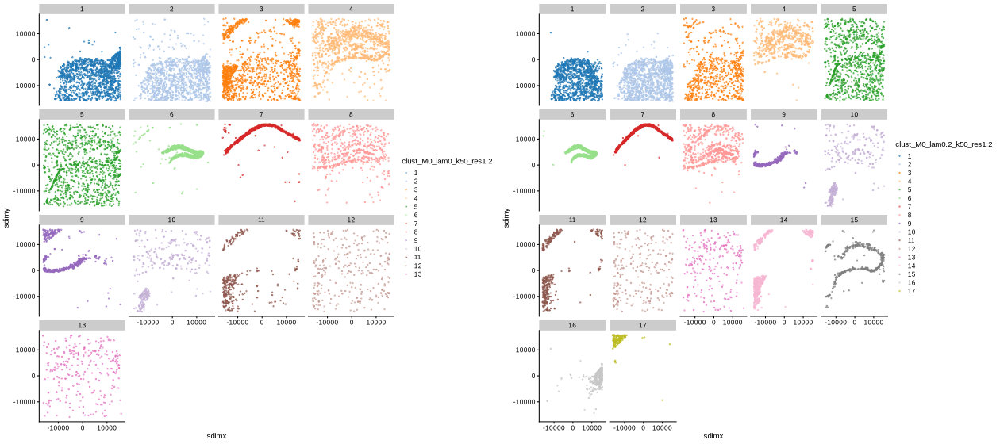
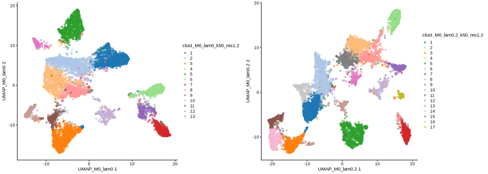

BANKSY is a method for clustering spatial omics data by augmenting the features of each cell with both an average of the features of its spatial neighbors along with neighborhood feature gradients. By incorporating neighborhood information for clustering, BANKSY is able to
BANKSY is applicable to a wide array of spatial technologies (e.g. 10x Visium, Slide-seq, MERFISH, CosMX, CODEX) and scales well to large datasets. For more details, check out:
BANKSY now includes a lazy PCA mode (lazy=TRUE in runBanksyPCA) that computes PCA directly via an implicit linear operator without materializing the full BANKSY matrix. This is the default and recommended mode. It has been benchmarked to 25 million cells at 5k features, taking 12.5 min / 163 GB at 10 million cells and 34.6 min at 25 million with on-disk BPCells storage; see NEWS for the full table. For analysis on large datasets (> 1 million samples), we recommend using BANKSY via SeuratWrappers: see this vignette.
The Banksy package can be installed via Bioconductor. This currently requires R >= 4.4.0.
BiocManager::install('Banksy')To install directly from GitHub instead, use
remotes::install_github("prabhakarlab/Banksy")To use the legacy version of Banksy utilising the BanksyObject class, use
remotes::install_github("prabhakarlab/Banksy@legacy")Banksy is also interoperable with Seurat via SeuratWrappers. Documentation on how to run BANKSY on Seurat objects can be found here. For installation of SeuratWrappers with BANKSY version >= 0.1.6, run
remotes::install_github('satijalab/seurat-wrappers')Load BANKSY. We’ll also load SpatialExperiment and SummarizedExperiment for containing and manipulating the data, scuttle for normalization and quality control, and scater, ggplot2 and cowplot for visualisation.
library(Banksy)
library(SummarizedExperiment)
library(SpatialExperiment)
library(scuttle)
library(scater)
library(cowplot)
library(ggplot2)Here, we’ll run BANKSY on mouse hippocampus data.
Initialize a SpatialExperiment object and perform basic quality control and normalization.
se <- SpatialExperiment(assay = list(counts = gcm), spatialCoords = locs)
# QC based on total counts
qcstats <- perCellQCMetrics(se)
thres <- quantile(qcstats$total, c(0.05, 0.98))
keep <- (qcstats$total > thres[1]) & (qcstats$total < thres[2])
se <- se[, keep]
# Normalization to mean library size
se <- computeLibraryFactors(se)
aname <- "normcounts"
assay(se, aname) <- normalizeCounts(se, log = FALSE)Run runBanksyPCA to compute BANKSY PCA embeddings. By default, this uses a lazy linear operator that computes PCA without materializing the full BANKSY matrix — computing the kNN graph and applying the BANKSY transform on the fly during the iterative PCA solver. This is memory-efficient and scales to millions of cells.
We run BANKSY at lambda=0 corresponding to non-spatial clustering, and lambda=0.2 corresponding to BANKSY for cell-typing. The number of spatial neighbors is set by k_geom.
An important note about choosing the
lambdaparameter for the older Visium v1 / v2 55um datasets or the original ST 100um technology:Modern high resolution technologies (Xenium, Visium HD, StereoSeq, MERFISH, STARmap PLUS, SeqFISH+, SlideSeq v2, and CosMx, and others): we recommend the usual defaults for
lambda. For cell typing, uselambda = 0.2(as shown below, or in this vignette) and for domain segmentation, uselambda = 0.8. These technologies are either imaging based, having true single-cell resolution (e.g., MERFISH), or are sequencing based, having barcoded spots on the scale of single-cells (e.g., Visium HD). We find that the usual defaults work well at this measurement resolution.Older Visium v1/v2 or ST technologies (with their much lower resolution spots, 55um and 100um diameter, respectively): we find that
lambda = 0.2seems to work best for domain segmentation. This could be because each spot already measures the average transcriptome of several cells in a neighbourhood. It seems thatlambda = 0.2shares enough information between these neighbourhoods to lead to good domain segmentation performance. For example, in the human DLPFC vignette, we uselambda = 0.2on a Visium v1/v2 dataset. Also note that in these lower resolution technologies, each spot can have multiple cells of different types, and as such cell-typing is not defined for them.
lambda <- c(0, 0.2)
se <- Banksy::runBanksyPCA(se, assay_name = aname, lambda = lambda, k_geom = 15)
#> Computing neighbors...
#> Spatial mode is kNN_median
#> Parameters: k_geom=15
#> Done
#> --- lambda = 0 ---
#> Building sparse weight matrix
#> Computing scaling parameters for own expression
#> Computing clipping excess for own expression
#> Computing scaling params and clipping for H0
#> H0 genes requiring clipping: 0 / 120
#> Clipping corrections: own=0 H0=0 entries
#> Computing BANKSY PCA (20 PCs) via C++ irlba (work=27)
#> iter=1 mprod=54 sv[20]=7.8915e+01 t=0s
#> iter=2 mprod=68 sv[20]=9.4830e+01 t=0s
#> iter=5 mprod=110 sv[20]=1.0418e+02 t=0s
#> iter=10 mprod=180 sv[20]=1.0568e+02 t=0s
#> iter=11 mprod=194 sv[20]=1.0568e+02 t=0s
#> Converged: iter=11, mprod=194
#> --- lambda = 0.2 ---
#> Building sparse weight matrix
#> Computing scaling parameters for own expression
#> Computing clipping excess for own expression
#> Computing scaling params and clipping for H0
#> H0 genes requiring clipping: 0 / 120
#> Clipping corrections: own=0 H0=0 entries
#> Computing BANKSY PCA (20 PCs) via C++ irlba (work=27)
#> iter=1 mprod=54 sv[20]=6.2809e+01 t=0s
#> iter=2 mprod=68 sv[20]=8.2233e+01 t=0s
#> iter=5 mprod=110 sv[20]=9.5297e+01 t=0s
#> iter=9 mprod=166 sv[20]=9.6004e+01 t=0s
#> Converged: iter=9, mprod=166
#> Done.Next, compute UMAP and perform clustering:
set.seed(1000)
se <- Banksy::runBanksyUMAP(se, use_agf = FALSE, lambda = lambda)
se <- Banksy::clusterBanksy(se, use_agf = FALSE, lambda = lambda, resolution = 1.2)Different clustering runs can be relabeled to minimise their differences with connectClusters:
se <- Banksy::connectClusters(se)
#> clust_M0_lam0.2_k50_res1.2 --> clust_M0_lam0_k50_res1.2Visualise the clustering output for non-spatial clustering (lambda=0) and BANKSY clustering (lambda=0.2).
cnames <- colnames(colData(se))
cnames <- cnames[grep("^clust", cnames)]
colData(se) <- cbind(colData(se), spatialCoords(se))
plot_nsp <- plotColData(se,
x = "sdimx", y = "sdimy",
point_size = 0.6, colour_by = cnames[1]
)
plot_bank <- plotColData(se,
x = "sdimx", y = "sdimy",
point_size = 0.6, colour_by = cnames[2]
)
plot_grid(plot_nsp + coord_equal(), plot_bank + coord_equal(), ncol = 2)
For clarity, we can visualise each of the clusters separately:
plot_grid(
plot_nsp + facet_wrap(~colour_by),
plot_bank + facet_wrap(~colour_by),
ncol = 2
)
Visualize UMAPs of the non-spatial and BANKSY embedding:
rdnames <- reducedDimNames(se)
umap_nsp <- plotReducedDim(se,
dimred = grep("UMAP.*lam0$", rdnames, value = TRUE),
colour_by = cnames[1]
)
umap_bank <- plotReducedDim(se,
dimred = grep("UMAP.*lam0.2$", rdnames, value = TRUE),
colour_by = cnames[2]
)
plot_grid(
umap_nsp,
umap_bank,
ncol = 2
)
options(width = 120)
sessioninfo::session_info()
#> ─ Session info ───────────────────────────────────────────────────────────────────────────────────────────────────────
#> setting value
#> version R version 4.5.1 (2025-06-13)
#> os Rocky Linux 9.8 (Blue Onyx)
#> system x86_64, linux-gnu
#> ui X11
#> language (EN)
#> collate C.UTF-8
#> ctype C.UTF-8
#> tz America/Los_Angeles
#> date 2026-09-29
#> pandoc 3.11 @ /gpfs/scrubbed/jxlee/conda/envs/banksy-bench-2/bin/ (via rmarkdown)
#> quarto NA
#>
#> ─ Packages ───────────────────────────────────────────────────────────────────────────────────────────────────────────
#> package * version date (UTC) lib source
#> abind 1.4-8 2024-09-12 [1] CRAN (R 4.5.1)
#> aricode 1.1.0 2026-05-13 [1] CRAN (R 4.5.3)
#> Banksy * 1.9.4 2026-09-29 [1] local (/gpfs/projects/h2lab/jxlee/genome-institute/Banksy)
#> beachmat 2.26.0 2025-10-29 [1] Bioconductor 3.22 (R 4.5.2)
#> beeswarm 0.4.0 2021-06-01 [1] CRAN (R 4.5.1)
#> Biobase * 2.70.0 2025-10-29 [1] Bioconductor 3.22 (R 4.5.2)
#> BiocGenerics * 0.56.0 2025-10-29 [1] Bioconductor 3.22 (R 4.5.2)
#> BiocNeighbors 2.4.0 2025-10-29 [1] Bioconductor 3.22 (R 4.5.2)
#> BiocParallel 1.44.0 2025-10-29 [1] Bioconductor 3.22 (R 4.5.2)
#> BiocSingular 1.26.1 2025-11-17 [1] Bioconductor 3.22 (R 4.5.2)
#> cli 3.6.6 2026-04-09 [1] CRAN (R 4.5.3)
#> codetools 0.2-20 2024-03-31 [1] CRAN (R 4.5.1)
#> cowplot * 1.2.0 2025-07-07 [1] CRAN (R 4.5.1)
#> data.table 1.18.6.1 2026-08-24 [1] CRAN (R 4.5.3)
#> dbscan 1.2.6 2026-08-25 [1] CRAN (R 4.5.3)
#> DelayedArray 0.36.1 2026-03-31 [1] Bioconductor 3.22 (R 4.5.3)
#> dichromat 2.0-1 2026-07-22 [1] CRAN (R 4.5.3)
#> digest 0.6.39 2025-11-19 [1] CRAN (R 4.5.2)
#> dplyr 1.2.1 2026-04-03 [1] CRAN (R 4.5.3)
#> evaluate 1.0.5 2025-08-27 [1] CRAN (R 4.5.1)
#> farver 2.1.2 2024-05-13 [1] CRAN (R 4.5.1)
#> fastmap 1.2.0 2024-05-15 [1] CRAN (R 4.5.1)
#> generics * 0.1.4 2025-05-09 [1] CRAN (R 4.5.1)
#> GenomicRanges * 1.62.1 2025-12-08 [1] Bioconductor 3.22 (R 4.5.2)
#> ggbeeswarm 0.7.3 2025-11-29 [1] CRAN (R 4.5.2)
#> ggplot2 * 4.0.3 2026-04-22 [1] CRAN (R 4.5.3)
#> ggrepel 0.9.8 2026-03-17 [1] CRAN (R 4.5.3)
#> glue 1.8.1 2026-04-17 [1] CRAN (R 4.5.3)
#> gridExtra 2.3.1 2026-06-25 [1] CRAN (R 4.5.3)
#> gtable 0.3.6 2024-10-25 [1] CRAN (R 4.5.1)
#> htmltools 0.5.9 2025-12-04 [1] CRAN (R 4.5.2)
#> igraph 2.3.3 2026-06-26 [1] CRAN (R 4.5.3)
#> IRanges * 2.44.0 2025-10-29 [1] Bioconductor 3.22 (R 4.5.2)
#> irlba 2.3.7 2026-01-30 [1] CRAN (R 4.5.2)
#> knitr 1.52 2026-09-06 [1] CRAN (R 4.5.3)
#> labeling 0.4.3 2023-08-29 [1] CRAN (R 4.5.1)
#> lattice 0.23-1 2026-08-12 [1] CRAN (R 4.5.3)
#> leidenAlg 1.1.8 2026-05-31 [1] CRAN (R 4.5.3)
#> lifecycle 1.0.5 2026-01-08 [1] CRAN (R 4.5.2)
#> magick 2.9.1 2026-02-28 [1] CRAN (R 4.5.2)
#> magrittr 2.0.5 2026-04-04 [1] CRAN (R 4.5.3)
#> Matrix 1.7-6 2026-07-25 [1] CRAN (R 4.5.3)
#> MatrixGenerics * 1.22.0 2025-10-29 [1] Bioconductor 3.22 (R 4.5.2)
#> matrixStats * 1.5.0 2025-01-07 [1] CRAN (R 4.5.1)
#> mclust 6.1.3 2026-07-05 [1] CRAN (R 4.5.3)
#> otel 0.2.0 2025-08-29 [1] CRAN (R 4.5.1)
#> pillar 1.11.1 2025-09-17 [1] CRAN (R 4.5.1)
#> pkgconfig 2.0.3 2019-09-22 [1] CRAN (R 4.5.1)
#> R6 2.6.1 2025-02-15 [1] CRAN (R 4.5.1)
#> RColorBrewer 1.1-3 2022-04-03 [1] CRAN (R 4.5.1)
#> Rcpp 1.1.2 2026-07-05 [1] CRAN (R 4.5.3)
#> RcppAnnoy 0.0.23 2026-01-12 [1] CRAN (R 4.5.2)
#> RcppHungarian 0.3 2023-09-05 [1] CRAN (R 4.5.3)
#> rjson 0.2.23 2024-09-16 [1] CRAN (R 4.5.1)
#> rlang 1.3.0 2026-07-05 [1] CRAN (R 4.5.3)
#> rmarkdown 2.32 2026-09-01 [1] CRAN (R 4.5.3)
#> RSpectra 0.16-2 2024-07-18 [1] CRAN (R 4.5.1)
#> rsvd 1.0.5 2021-04-16 [1] CRAN (R 4.5.1)
#> S4Arrays 1.10.1 2025-12-01 [1] Bioconductor 3.22 (R 4.5.2)
#> S4Vectors * 0.48.1 2026-04-05 [1] Bioconductor 3.22 (R 4.5.3)
#> S7 0.2.2 2026-04-22 [1] CRAN (R 4.5.3)
#> ScaledMatrix 1.18.0 2025-10-29 [1] Bioconductor 3.22 (R 4.5.2)
#> scales 1.4.0 2025-04-24 [1] CRAN (R 4.5.1)
#> scater * 1.38.1 2026-03-20 [1] Bioconductor 3.22 (R 4.5.3)
#> sccore 1.0.7 2026-04-06 [1] CRAN (R 4.5.3)
#> scuttle * 1.20.0 2025-10-30 [1] Bioconductor 3.22 (R 4.5.2)
#> Seqinfo * 1.0.0 2025-10-29 [1] Bioconductor 3.22 (R 4.5.2)
#> sessioninfo 1.2.4 2026-06-04 [1] CRAN (R 4.5.3)
#> SingleCellExperiment * 1.32.0 2025-10-29 [1] Bioconductor 3.22 (R 4.5.2)
#> SparseArray 1.10.10 2026-03-30 [1] Bioconductor 3.22 (R 4.5.3)
#> SpatialExperiment * 1.20.0 2025-10-29 [1] Bioconductor 3.22 (R 4.5.2)
#> SummarizedExperiment * 1.40.0 2025-10-29 [1] Bioconductor 3.22 (R 4.5.2)
#> tibble 3.3.1 2026-01-11 [1] CRAN (R 4.5.2)
#> tidyselect 1.2.1 2024-03-11 [1] CRAN (R 4.5.1)
#> uwot 0.2.5 2026-08-29 [1] CRAN (R 4.5.3)
#> vctrs 0.7.3 2026-04-11 [1] CRAN (R 4.5.3)
#> vipor 0.4.7 2023-12-18 [1] CRAN (R 4.5.1)
#> viridis 0.6.5 2024-01-29 [1] CRAN (R 4.5.1)
#> viridisLite 0.4.3 2026-02-04 [1] CRAN (R 4.5.2)
#> withr 3.0.3 2026-06-19 [1] CRAN (R 4.5.3)
#> xfun 0.60 2026-07-09 [1] CRAN (R 4.5.3)
#> XVector 0.50.0 2025-10-29 [1] Bioconductor 3.22 (R 4.5.2)
#> yaml 2.3.12 2025-12-10 [1] CRAN (R 4.5.2)
#>
#> [1] /gpfs/scrubbed/jxlee/conda/envs/banksy-bench-2/lib/R/library
#> * ── Packages attached to the search path.
#>
#> ──────────────────────────────────────────────────────────────────────────────────────────────────────────────────────